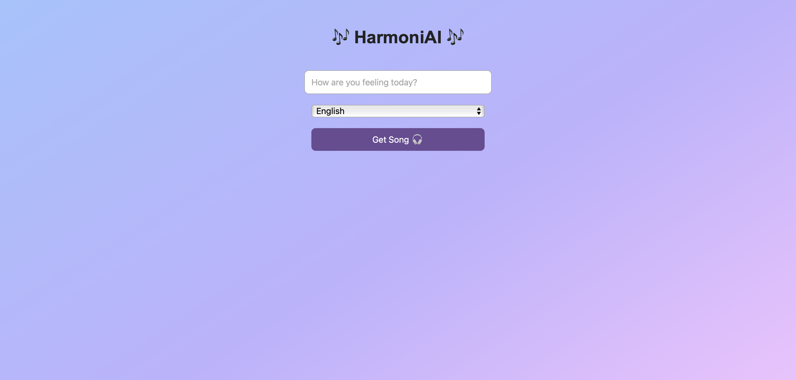
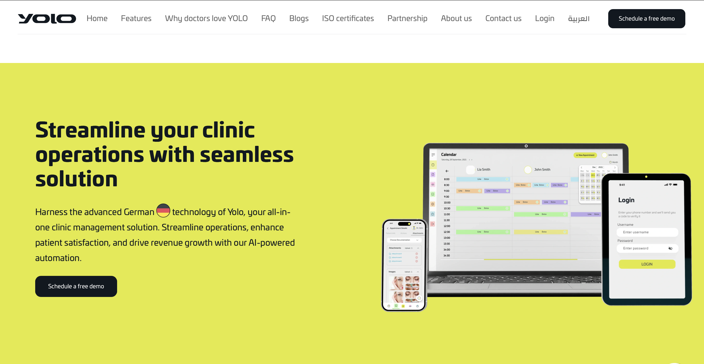
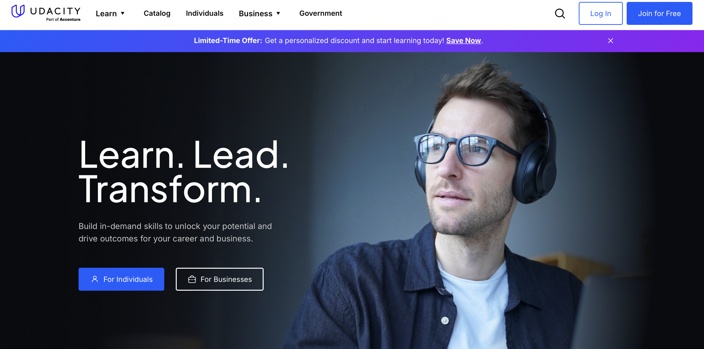

Hello, It's me
Vaishnaa Babakaran
A passionate System Developer
who enjoys designing and building efficient, reliable, and scalable systems. I build structured, secure, and performance-driven systems that support real-world business needs.
Download CV
About Me
I am an undergraduate student at the University of Sri Jayewardenepura, Faculty of Computing, following Bachelor of Computing Honours in Information Systems Engineering.
My academic journey has helped me build a solid foundation in information systems, software development concepts, and the practical use of technology to solve real-world problems.
With a strong interest in technology and problem-solving, I have developed knowledge in coding, web development, system development, and basic system design. I enjoy understanding how digital systems are structured and how they can be improved to deliver efficient, reliable, and user-friendly solutions that meet real-world requirements.
Currently, I am focused on strengthening my skills in web technologies, databases, and modern IT tools through hands-on project work. By actively learning and applying new concepts, I aim to enhance my technical and analytical abilities while continuing to grow through collaboration and knowledge sharing with students and professionals in the technology field.
My Education
Bachelor of Computing (Hons) in Information Systems Engineering
University of Sri Jayewardenepura — Faculty of Computing
Undergraduate (3rd Year)
- Focus: Web Development, Databases, System Analysis & Design
- Hands-on projects using HTML, CSS, JavaScript, PHP, MySQL
- Interested in building reliable, user-friendly systems
G.C.E. Advanced Level Examination
Stream: Biology
Results: 3C
- Biology - C
- Chemistry - C
- Physics - C
- General English - B
This stage strengthened my discipline, study habits, and resilience while managing theory-heavy subjects and exams.
G.C.E. Ordinary Level (O/L)
Results: 9A's
Sri Lanka
- Strong academic foundation and discipline
- Consistent performance across all subjects
My Skills
Technical Skills
Programming Languages
- Java
- Python
- PHP
- C Programming
- C++ Programming
- JavaScript
Web Development
- HTML
- CSS
- Bootstrap
- Responsive Web Design
- Frontend Development
- Backend Development
- REST APIs
Database
- MySQL
- SQL
- Database Design
Tools
- GitHub
- VS Code
- Netlify
- Figma
Systems & Concepts
- Object-Oriented Programming
- System Analysis & Design
- SDLC
- UML
Soft Skills
Communication
- Clear updates
- Explaining technical ideas
Teamwork
- Collaboration
- Supporting teammates
- Sharing Knowledge
Problem Solving
- Debugging
- Breaking problems into steps
Time Management
- Meeting deadlines
- prioritizing tasks
My Projects
Band Hiring Platform

A web platform that allows event organizers to discover music bands and send hiring requests based on genre and event type.
This system was designed to simplify the process of finding suitable bands for events. Users can browse band profiles, filter them by music genre, and submit booking requests directly through the platform. I focused on designing a smooth user journey that minimizes steps and avoids confusion during the hiring process.
Tech Used: HTML, CSS, JavaScript,PHP
HarmonyAI
An intelligent music recommendation system that plays songs based on the user's mood and language preference.
HarmonyAI analyzes user input such as mood and preferred language to recommend suitable songs. Instead of using heavy machine learning models, I implemented rule-based logic to ensure fast responses and predictable results. The system integrates with YouTube to fetch and play music, focusing on user experience rather than complex computation.
Tech Used: Python, Rule-based Logic, YouTube API
Clinic Management System
Web-based system for managing patient records, appointments, and billing in small clinics.
The system reduces paperwork, improves data accuracy, and enhances efficiency for both staff and patients. This project strengthened my understanding of database design, system workflows, and real-world business requirements in healthcare environments.
Tech Used:HTML, CSS, PHP, MySQL
Academic Project
A university-level system developed as part of coursework to understand real-world application development.
This project helped me apply theoretical concepts into a working system. I gained practical experience in structuring code, handling user inputs, and managing application flow.
Tech Used: HTML, CSS
What I Do
Web Development
- Responsive websites (mobile-first layout)
- Clean UI with HTML, CSS, JavaScript
- Basic backend features with PHP + MySQL
Database & System Design
- ER diagrams, normalization, schema design
- CRUD operations, query optimization basics
- Requirement understanding + workflow planning
UI Design (Basic)
- Wireframes and simple prototypes in Figma
- Consistent spacing, typography, and layout
- Design focused on clarity and usability
Project Support
- Bug fixing and improving existing UI
- Code cleanup and structure improvements
- Documentation (README, screenshots, setup steps)